"Let us not grow weary in doing good, for in due season we will reap, if we do not give up."Galatians 6:9
Here's a report straight from FCA, and a look at all that God has been doing in Cherokee County this season. I am so grateful you get to see it firsthand.
Every one of these moments happened because people like you carry part of the weight, in prayer, in support, in simply asking how it's going. Thank you for walking this season with me.
Jeremy Womack
Area Representative, Fellowship of Christian Athletes, Cherokee County
1Dean Rusk FCA, Dean Rusk Middle School
Hundreds of students. One maxed-out Chick-fil-A. Bibles going out every week.
I was honored to be a part of Mark Weems' FCA Chick-fil-A group. I got to watch sixth, seventh, and eighth graders, guys and girls, gather on fire for the Lord, and they do it every single week. Hundreds of students, maxing out Chick-fil-A. It's honestly one of the coolest experiences I've been a part of.
Bibles raised at the weekly Dean Rusk FCA gathering.
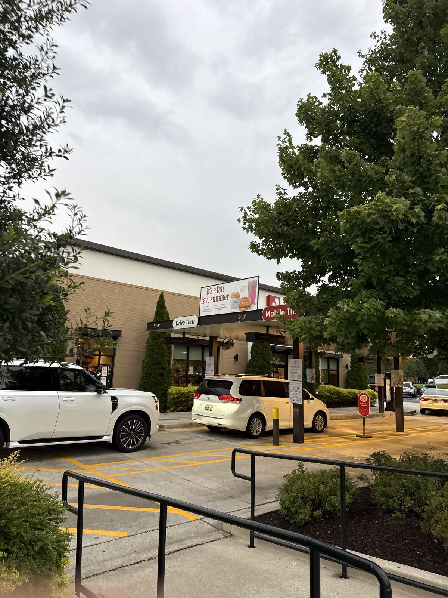
The same Chick-fil-A, week after week, regularly at full capacity.
Watching a Chick-fil-A get maxed out with middle schoolers holding Bibles instead of phones. That's not something you forget.
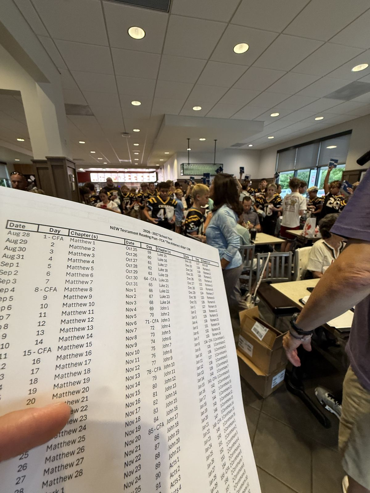
The reading plan students are working through together.
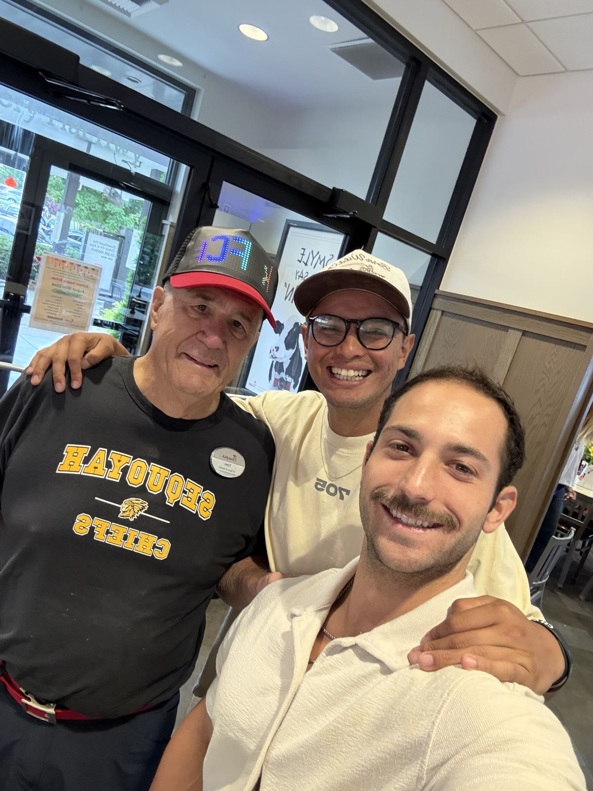
With teammates in ministry, celebrating another week of it.
2HEW Fitness, Evangelism Training
Learning how to actually make disciples, not just make converts.
John, one of our other FCA area reps, runs a Bible study out of his gym, HEW Fitness. He put together a four-week deep dive on evangelism and discipleship, real, practical tools for how to share your faith and how to walk with someone afterward. Getting to sit under that training was a privilege, and it's already shaping how I lead my own groups.
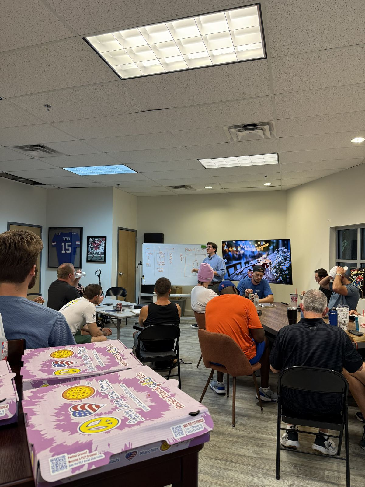
Four weeks of training on evangelism and discipleship, taught out of Mark 4.
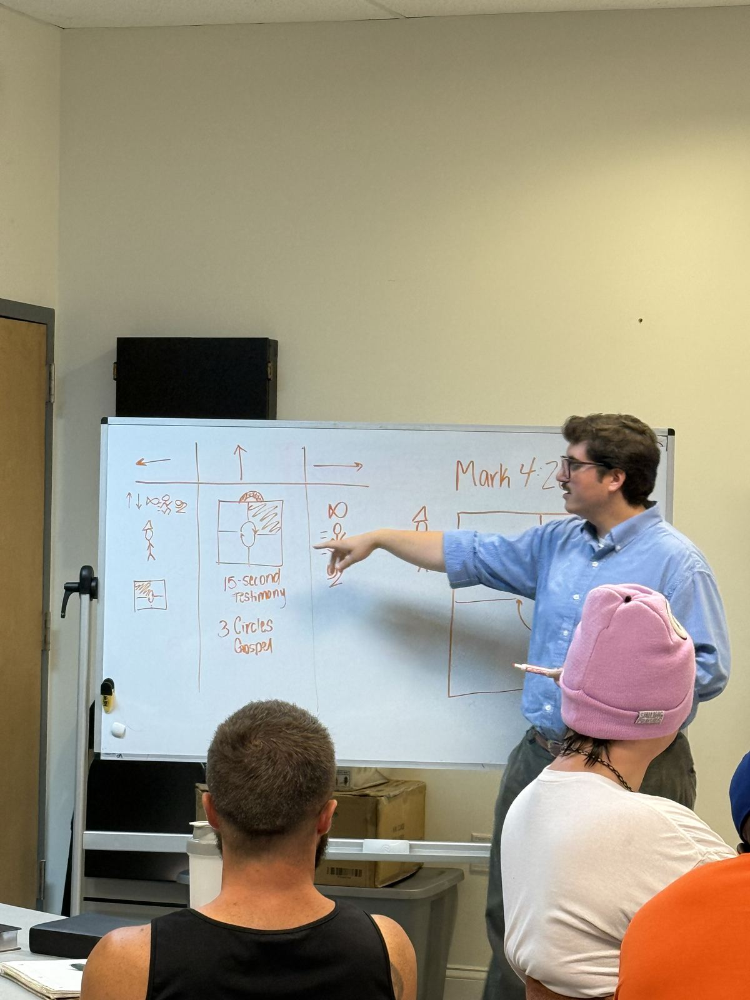
The 15-second testimony and the "3 Circles" gospel. Tools worth carrying into every conversation.
3Summer Discipleship
Two and a half years with these guys, and now they're headed to high school.
Our summer discipleship group closed out this season, and I couldn't be prouder. I've walked with these guys for two and a half years, watched them grow, watched them struggle, watched them fall in love with the Lord and actually become disciples of Jesus, not just kids who show up. Now they're off to high school, and I'm excited to keep showing up for some of them weekly, whether that's on the sidelines of their sport or over breakfast on a Friday morning.
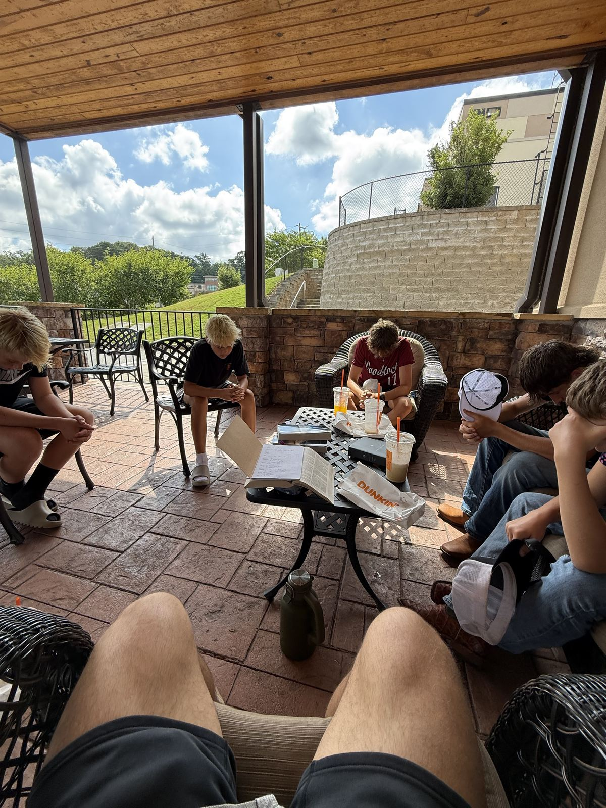
Bibles open, notes in the margins. A normal Tuesday for this group.
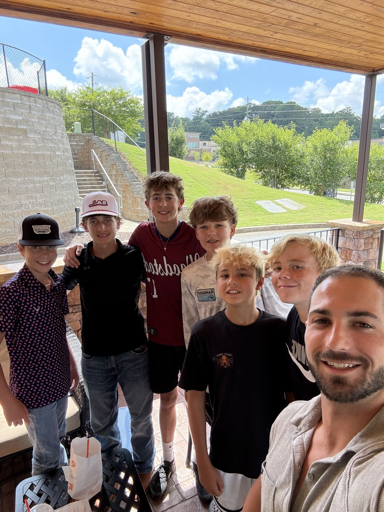
The crew, at the close of another summer together.
I've watched them struggle, and I've watched them fall in love with the Lord. That's the whole job, right there.
4Freedom Middle School
Going back to where it started.
I spent two years running a discipleship group at Freedom Middle School before stepping into this full-time role. Getting to go back, lead a group again, and see Hank, the teacher who sponsored it from day one, was an honor. Some rooms you never really leave.
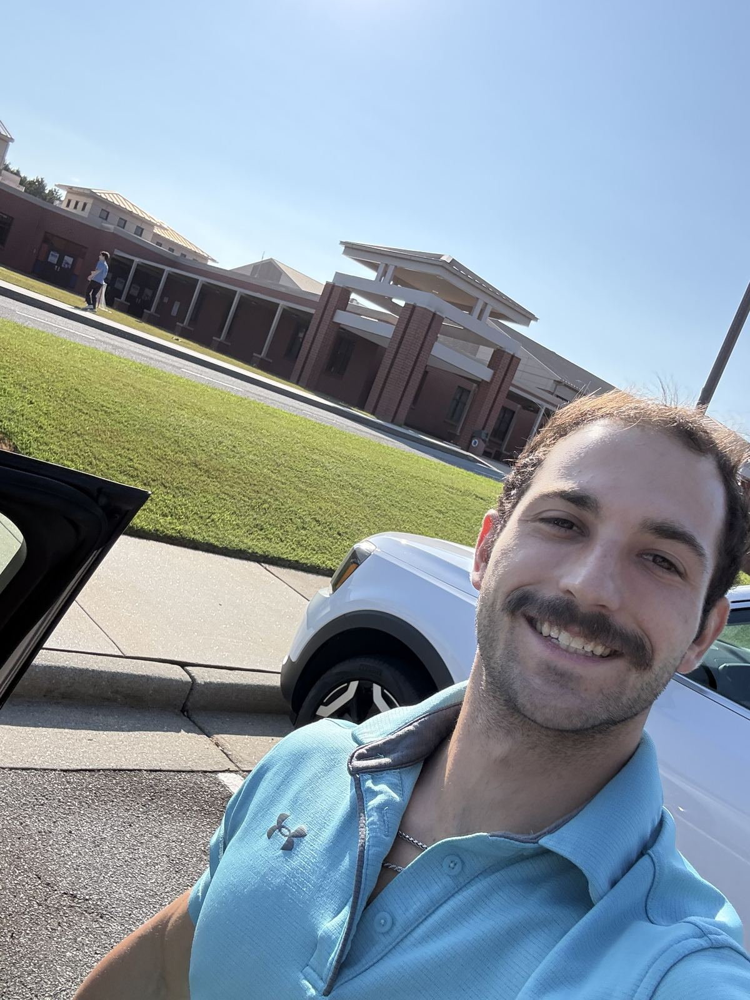
Back on campus at Freedom Middle.
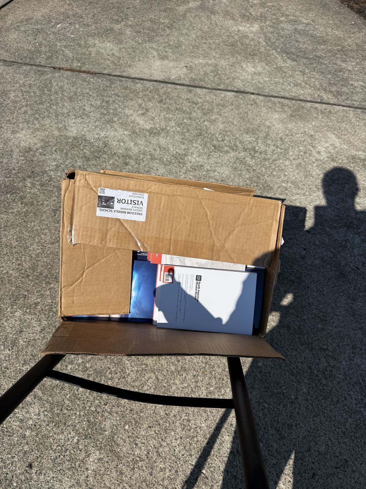
Bibles and mission board resources, ready to hand off.
5Iron Oath, A Man's Purpose
Raising up men, physically, spiritually, mentally.
Iron Oath is something we've launched since I stepped into this role, a men's brotherhood built around growing together in three directions at once: physically, spiritually, and mentally. It's about raising up men of God who actually show up for each other. I'm genuinely pumped to be leading this alongside everything else God has going on right now.
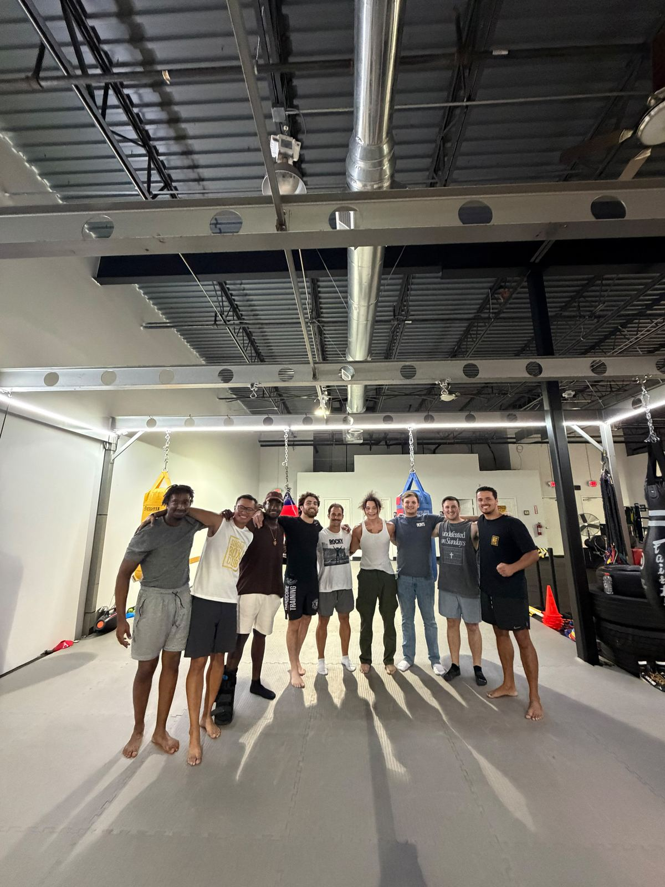
Iron Oath, together after a session. Brotherhood built one rep and one conversation at a time.
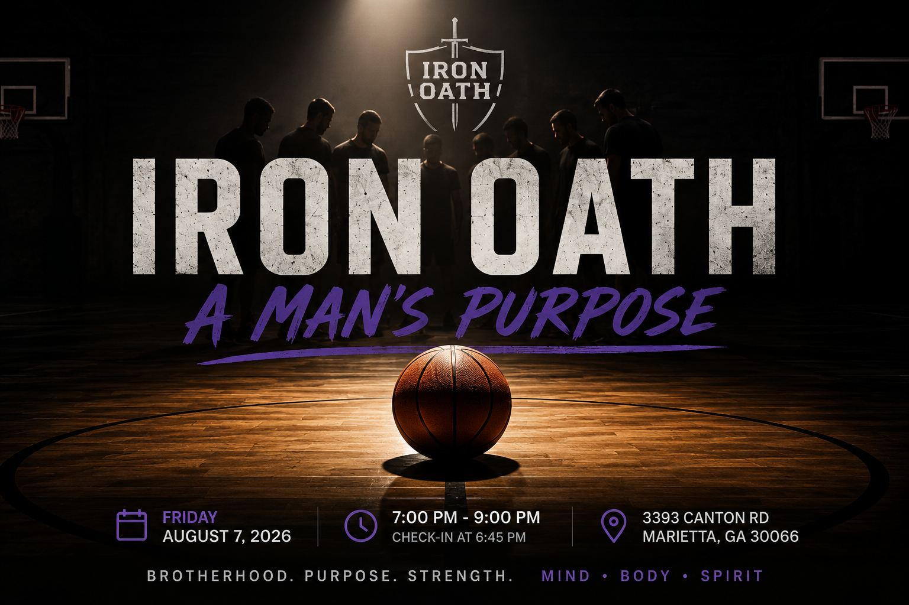
One of our recent gatherings. Brotherhood, purpose, strength.
Thank you for walking through this season with me.
None of this happens without people standing behind it in prayer and support. I wanted you to see exactly where that support has gone, into Bibles handed to sixth graders, into training that sharpens how we disciple, into kids who grew up right in front of us, and into men choosing to get stronger together in every sense of the word.
More seasons ahead. Grateful you're in this one with me.
Jeremy Womack, Fellowship of Christian Athletes, Cherokee County